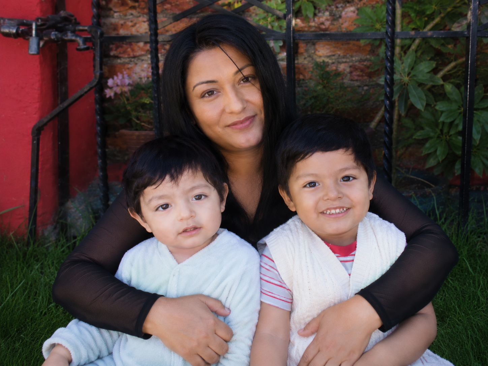
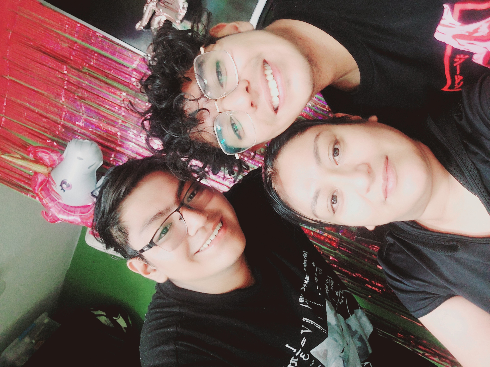
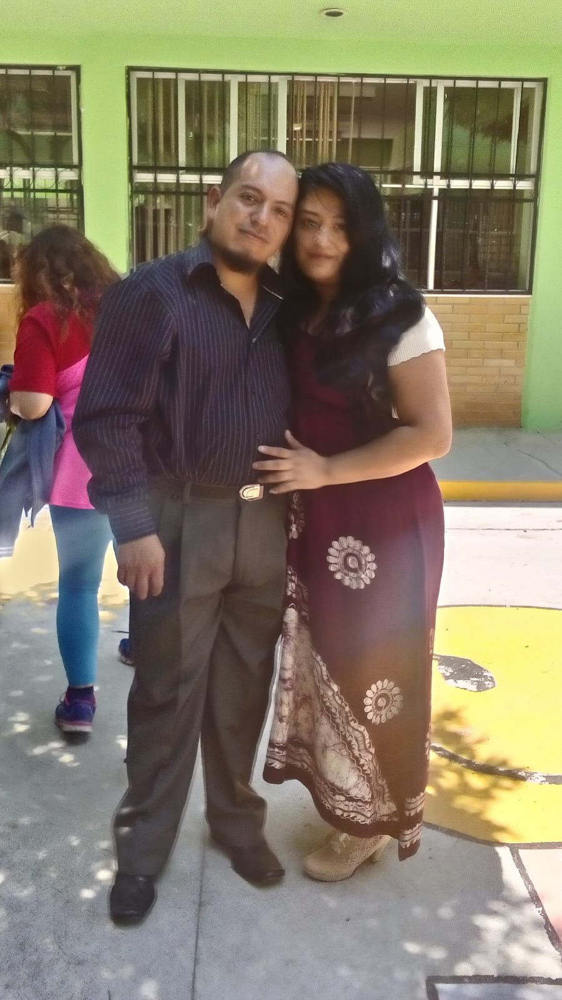
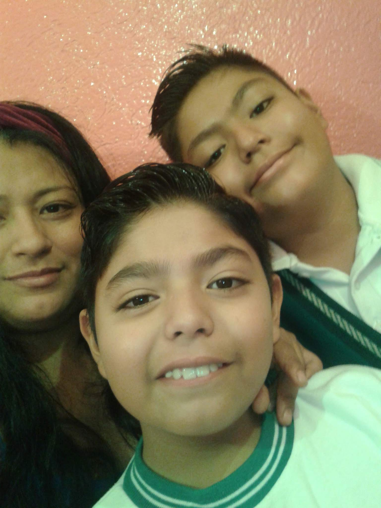
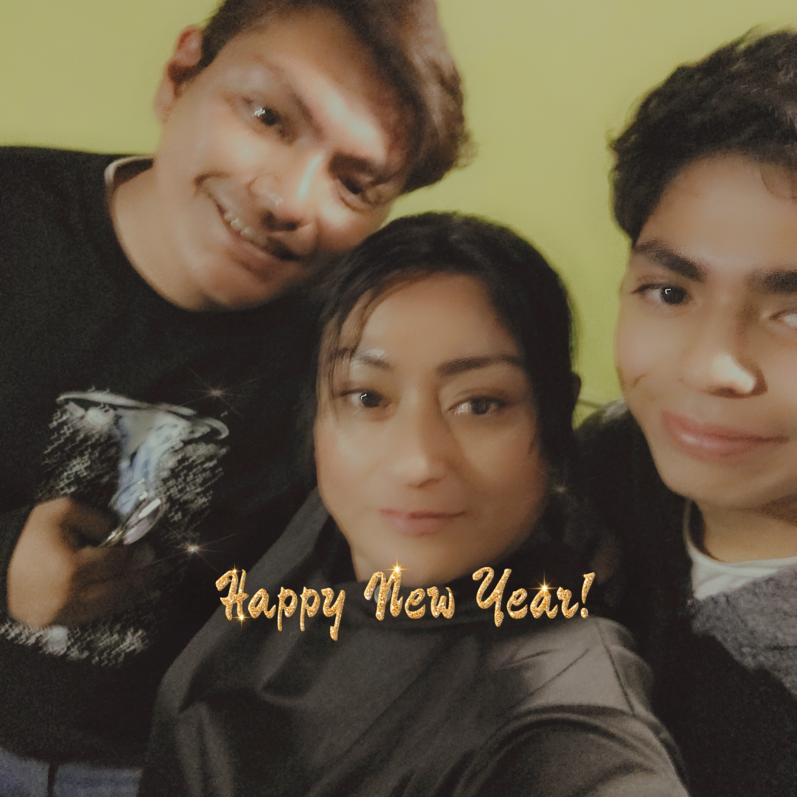
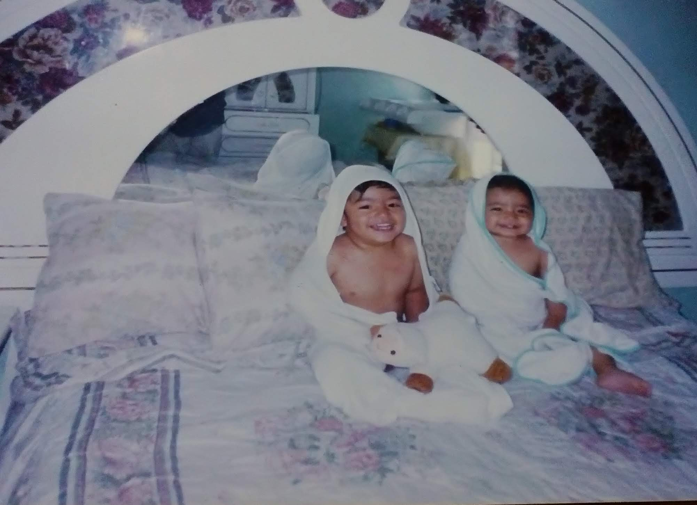
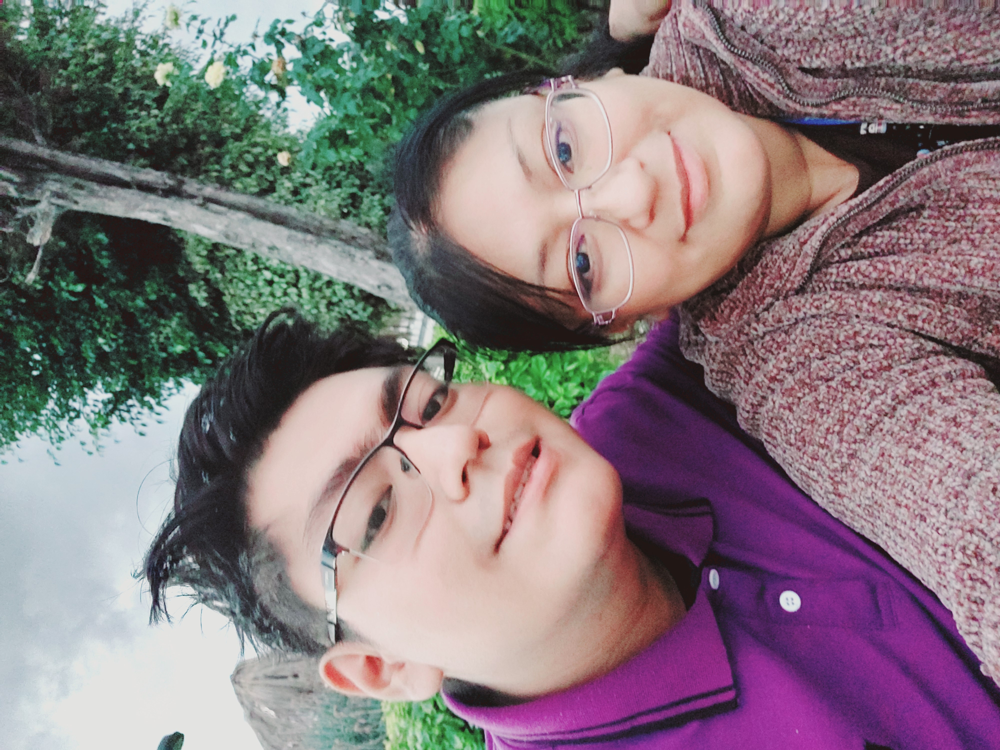

✨ Feliz Día Mamá ✨
💖 Por siempre mi mayor inspiración 💖

🌸 Recuerdo especial

🌷 Sonrisa única

💗 Abrazo eterno

⭐ Magia contigo

🌺 Momentos felices

🍬 Mi todo

🎀 Cómplice de vida

💕 Te amo infinito
Querida mamá
Hoy quiero tomarme un momento para decirte con el corazón lo que siento por ti todos los días. Eres mi mayor ejemplo, mi refugio seguro y la luz en mis momentos más difíciles. 🌷
Valoro infinitamente cada esfuerzo, cada sacrificio y todo el amor incondicional que me has dado. Gracias por tu paciencia, por creer en mí cuando yo dudaba y por esos abrazos que siempre logran reiniciarme el alma. Si hoy soy quien soy, es por todo lo hermoso que has sembrado en mí. ✨
Te quiero muchísimo, mamá, mucho más de lo que las palabras pueden explicar. Deseo que tengas un día hermoso, tranquilo y que la vida te devuelva todo el cariño que nos regalas a diario.
¡Feliz Día de las Madres! ❤️
Hoy quiero tomarme un momento para decirte con el corazón lo que siento por ti todos los días. Eres mi mayor ejemplo, mi refugio seguro y la luz en mis momentos más difíciles. 🌷
Valoro infinitamente cada esfuerzo, cada sacrificio y todo el amor incondicional que me has dado. Gracias por tu paciencia, por creer en mí cuando yo dudaba y por esos abrazos que siempre logran reiniciarme el alma. Si hoy soy quien soy, es por todo lo hermoso que has sembrado en mí. ✨
Te quiero muchísimo, mamá, mucho más de lo que las palabras pueden explicar. Deseo que tengas un día hermoso, tranquilo y que la vida te devuelva todo el cariño que nos regalas a diario.
¡Feliz Día de las Madres! ❤️